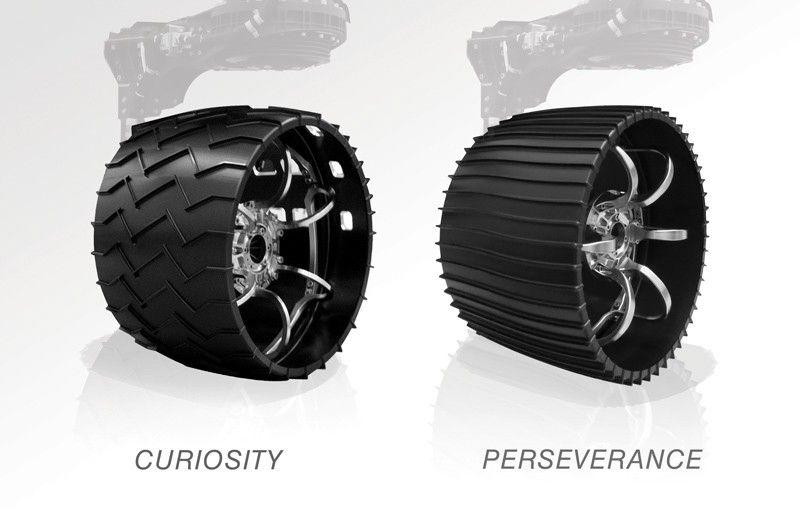
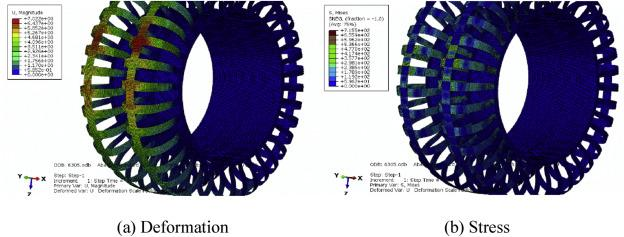
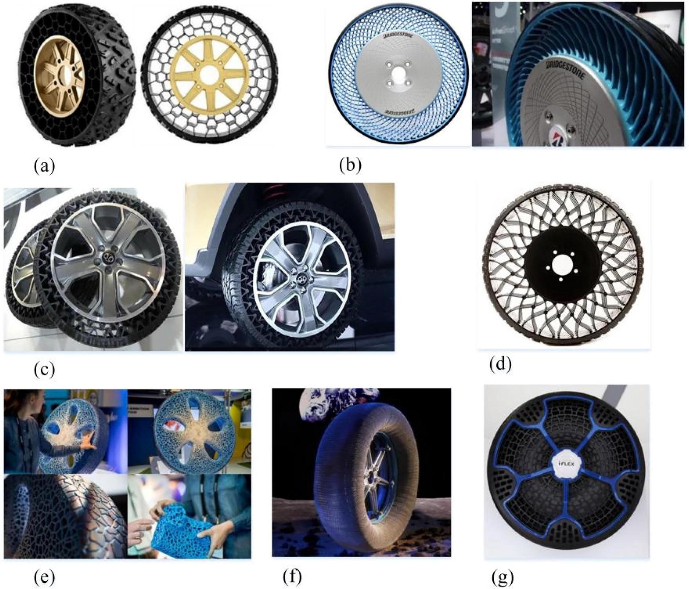

| A | B | C | D | E | F | G | H | I | J | K | L | M | N | O | P | Q | R | S | T | U | V | W | X | Y | Z | AA | |
|---|---|---|---|---|---|---|---|---|---|---|---|---|---|---|---|---|---|---|---|---|---|---|---|---|---|---|---|
1 | EDP Action 2: Understand Problem and Context | ||||||||||||||||||||||||||
2 | TASKS | ||||||||||||||||||||||||||
3 | 1.0 | Create a need-to-know-list: Identify a minimum of 30 unique research questions (ref Workbook pg 24 & 29). Focus on Exploring Existing Solutions category for over half. | |||||||||||||||||||||||||
4 | |||||||||||||||||||||||||||
5 | |||||||||||||||||||||||||||
6 | |||||||||||||||||||||||||||
7 | |||||||||||||||||||||||||||
8 | |||||||||||||||||||||||||||
9 | |||||||||||||||||||||||||||
10 | |||||||||||||||||||||||||||
11 | |||||||||||||||||||||||||||
12 | |||||||||||||||||||||||||||
13 | |||||||||||||||||||||||||||
14 | |||||||||||||||||||||||||||
15 | Research Question | Problem Context Quadrant | Assignee | Contributor | Date | Hours | |||||||||||||||||||||
16 | 1 | How have previous competitors' rubbers wheels performed? | Exploring Existing Slns. | Deirdre Hunter | Jan 4, 2025 | 0.5 | |||||||||||||||||||||
17 | 2 | How have previous competitors' metallic wheels performed? | Exploring Existing Slns. | ||||||||||||||||||||||||
18 | 3 | What are some of the most abstract wheel designs from past teams and what worked and what didn't? | Exploring Existing Slns. | ||||||||||||||||||||||||
19 | 4 | What wheel material designs and ideas have the most successful teams over the years used? | Exploring Existing Slns. | ||||||||||||||||||||||||
20 | 5 | What wheel material designs and ideas have been consistently the worst performing over the years? | Exploring Existing Slns. | ||||||||||||||||||||||||
21 | 6 | How are current teams making efforts to lower cost and weight of their wheels? | Exploring Existing Slns. | ||||||||||||||||||||||||
22 | 7 | Outside of the competition what have actual Lunar or Mars rovers utilized? | Exploring Existing Slns. | ||||||||||||||||||||||||
23 | 8 | What solutions have had critical fails or problems in the field? | Exploring Existing Slns. | ||||||||||||||||||||||||
24 | 9 | What is the history of the wheel design in regards to the Robotics Competition? | Background | ||||||||||||||||||||||||
25 | 10 | What are light materials that can handle the stress in the inner part of the wheel | Background | ||||||||||||||||||||||||
26 | 11 | What is a wheel, and what is the hisotry of the wheel? | Background | ||||||||||||||||||||||||
27 | 12 | What is traction, how does it work physically? | Background | ||||||||||||||||||||||||
28 | 13 | What is a method to maxmise traction in a wheel, what are the lossees? | Background | ||||||||||||||||||||||||
29 | 14 | How to make a wheel fast and simple to switch out? | Background | ||||||||||||||||||||||||
30 | 15 | What materials are wheels be made out of? | Background | ||||||||||||||||||||||||
31 | 16 | How does the radius of a wheel affect speed, weight and traction? | Background | ||||||||||||||||||||||||
32 | 17 | What is the maximum temperature the wheel will have to experience? | Background | ||||||||||||||||||||||||
33 | 18 | Are there any regualtions on pressure based wheels versus track based wheels? | Governs the Problem | ||||||||||||||||||||||||
34 | 19 | Are there any solutions that adhere to the competetion rules but conflict with the goals /vision of the club | Governs the Problem | ||||||||||||||||||||||||
35 | 20 | Are there any wheel designs that do not adhere to the competition rules | Governs the Problem | ||||||||||||||||||||||||
36 | 21 | Are there any limitations for the size of each wheel? | Governs the Problem | ||||||||||||||||||||||||
37 | 22 | What are the reasons for the lack of good solutions? | Governs the Problem | ||||||||||||||||||||||||
38 | 23 | Are there any material related restrictions? | Governs the Problem | ||||||||||||||||||||||||
39 | 24 | How much is the material cost for each wheel? | Business Perspective | ||||||||||||||||||||||||
40 | 25 | What are some designs of wheels that have similar performance to the rover wheel on the existing market? | Business Perspective | ||||||||||||||||||||||||
41 | 26 | How many set of rover wheels should be produced to meet the needs of the Rice Robotics club? | Business Perspective | - | |||||||||||||||||||||||
42 | 27 | How much is the labor cost for each wheel? | Business Perspective | ||||||||||||||||||||||||
43 | 28 | How much will the manufacturing cost be for existing designs on the market or designs similar to rover wheels? | Business Perspective | ||||||||||||||||||||||||
44 | 29 | What are some types of design or material that can maximize the performance of the wheel while minimizing the cost? | Business Perspective | ||||||||||||||||||||||||
45 | 30 | Is the performance of the wheel directly proportional to the cost for the existing designs on the market? | Business Perspective | ||||||||||||||||||||||||
46 | |||||||||||||||||||||||||||
47 | 2.0 | Narrow the list to the 16 most critical questions to research (for a 5-person team, 20 questions and for a 3-person team, 15 questions) [Highlight these questions above.] | |||||||||||||||||||||||||
48 | Balance the questions between (8) Exploration of Existing Solutions and (8) in the other three problem context spaces (Governs the Problem, Business Perspective, Background). | ||||||||||||||||||||||||||
49 | Speak with instructors and DM to identify the focus of your research and review questions | ||||||||||||||||||||||||||
50 | Critical research questions vary among projects, some might need more background knowledge while others have applicable regulations which are critical to understand. | ||||||||||||||||||||||||||
51 | |||||||||||||||||||||||||||
52 | 3.0 | Complete the DCR tables, 1 question per table with a minimum of 1 source, some questions might require multiple sources. Research must relate back to the problem and project. Please organize the DCRs by topic, not by author! 5-person teams will need to make additional copies of this table below. | |||||||||||||||||||||||||
53 | All team members should review each others DCRs. | ||||||||||||||||||||||||||
54 | |||||||||||||||||||||||||||
55 | Research Question | Outside of the competition what have actual Lunar or Mars rovers utilized? | Contributor | Date | Hours | ||||||||||||||||||||||
56 | Team Member | Antony Saleh | Relevant Images | ||||||||||||||||||||||||
57 | Research | The Mars Rover appears to have an aluminium tire with wedges allowing for more traction; however, over the long term, the wheels have suffered damage, causing cracks and holes in the metal[1]. NASA plans to send the Perseverance rover, which will also use aluminium; however, the wheels will have a thicker diameter[3]. There is some research into the applicability of "Shape Memory Alloys" [2], which, when under specific conditions, return to their original shape, allowing them to handle more stress and strain without losing their shape. |  | ||||||||||||||||||||||||
58 | |||||||||||||||||||||||||||
59 | |||||||||||||||||||||||||||
60 | |||||||||||||||||||||||||||
61 | |||||||||||||||||||||||||||
62 | |||||||||||||||||||||||||||
63 | |||||||||||||||||||||||||||
64 | |||||||||||||||||||||||||||
65 | Citation(s) | [1] A. Rankin, N. Patel, E. Graser, J. Freddy Wang, K.Rink, Assessing Mars Curiosity Rover Wheel Damage. Jet Propulsion Laboratory, California Institute of Technology, 2022. [2] NASA, Mars 2020: Perseverance Rover – Wheels and Legs, Jet Propulsion Laboratory, California Institute of Technology, Jul. 22, 2025. [3] S. Lilly, NASA Sets Sights on Mars Terrain with Revolutionary Tire Tech. NASA, 2025 | |||||||||||||||||||||||||
66 | Most significant learning & Why, in 1 sentence. | Aluminimium is the material most commonly used right now for the Mars Wheels, this is important to take as an example for our design as aluminium is light but can handle stress | |||||||||||||||||||||||||
67 | |||||||||||||||||||||||||||
68 | |||||||||||||||||||||||||||
69 | Research Question | What are some of the most abstract wheel designs from past teams and what worked and what didn't? | Contributor | Date | Hours | ||||||||||||||||||||||
70 | Team Member | Luke Van Leeuwen | Relevant Images | ||||||||||||||||||||||||
71 | Research | The OSU team (top image) uses abnormally large wheels made of a polymer composite with strips of rubber for some added traction. This larger and chunkier wheel design yielded them a 1st place finish in the 2024 Canadian international finals. This could be a design that we take influence from; they are using a non-pressurized wheel system. However, our client seems to be more interested in metal-based wheels than rubber ones like this. The Sooner Rover team (bottom left) uses a cone-like wheel design with a multiple-jointed rover. This design got them invited to compete against the top 34 teams. Despite their rover's success with rough terrain in a video on their website, the concept of this design is not replicable by us because it would require a complete rover redesign, which extends beyond our influence on the Rice Robotics team. The West Virginia University team (bottom right) uses the most abstract design from what I've seen in the competition. They use a star design with a flattened tip of the star with a rubber tread on it. This design is very strong at grabbing onto large obstacles and pulling their rover up. It has yielded them amazing results in the worldwide competitions: 1st 2023, 2nd 2024, and 2nd 2025. This design is extremely promising and hasn't been done by many other teams, so I'd designate using it as an influence on our design as a high-risk, high-reward option. Across all of these designs, they all attract more attention from the selection committee that chooses which teams are going to be invited to the competition. | |||||||||||||||||||||||||
72 | |||||||||||||||||||||||||||
73 | |||||||||||||||||||||||||||
74 | |||||||||||||||||||||||||||
75 | |||||||||||||||||||||||||||
76 | |||||||||||||||||||||||||||
77 | |||||||||||||||||||||||||||
78 | |||||||||||||||||||||||||||
79 | |||||||||||||||||||||||||||
80 | |||||||||||||||||||||||||||
81 | Citation(s) | [1]“Rover,” Osurobotics.club, 2017. -(accessed Sep. 11, 2025). [2]“Sooner Rover Team,” Ou.edu, 2024. https://ou.edu/soonerrover/ (accessed Sep. 11, 2025). [3]“University Rover Challenge Team | Home,” Wvu.edu, 2024. https://urc.orgs.wvu.edu/ (accessed Sep. 11, 2025) | |||||||||||||||||||||||||
82 | Most significant learning & Why, in 1 sentence. | The abstract wheel designs can perform at a high level, and they attract more attention from the selection committee, meaning that you are more likely to be invited to participate in the regional and international competitions. | |||||||||||||||||||||||||
83 | |||||||||||||||||||||||||||
84 | |||||||||||||||||||||||||||
85 | Research Question | What is traction, how does it work physically? | Contributor | Date | Hours | ||||||||||||||||||||||
86 | Team Member | Connor Gumbs | Relevant Images | ||||||||||||||||||||||||
87 | Research | Traction is the frictional force between a wheel (or track) and the ground that enables motion without slipping. It depends on the normal force (the rover’s weight pressing down on the wheel) and the coefficient of friction between the wheel material and terrain. On loose surfaces like sand or gravel, traction is also influenced by how well the wheel can interlock with the particles and prevent them from shearing under load. The greater the surface contact area and the more effective the tread or grousers at engaging the soil, the more traction the rover achieves. However, if too much slip occurs, wheels can dig in and lose effectiveness, so traction is a balance between grip and controlled slippage[1][2].' | |||||||||||||||||||||||||
88 | |||||||||||||||||||||||||||
89 | |||||||||||||||||||||||||||
90 | |||||||||||||||||||||||||||
91 | |||||||||||||||||||||||||||
92 | |||||||||||||||||||||||||||
93 | |||||||||||||||||||||||||||
94 | Citation(s) | [1] M.A. Elsheikh, "Design of a special rigid wheel for traversing loose soil," Scientific Reports, 2023. https://www.nature.com/articles/s41598-022-27312-6 [2] J. Ding, A. Moussa, H. Li, "Slip-Based Traction Control of a Planetary Rover," Springer Lecture Notes in Control and Information Sciences, 2006. https://link.springer.com/chapter/10.1007/3-540-36268-1_59 | |||||||||||||||||||||||||
95 | Most significant learning & Why, in 1 sentence. | Traction is the frictional interaction between wheels and terrain, and understanding it is critical because it directly determines whether our rover can climb slopes and maneuver effectively without getting stuck. | |||||||||||||||||||||||||
96 | |||||||||||||||||||||||||||
97 | |||||||||||||||||||||||||||
98 | Research Question | What are some designs of wheels that have similar performance to the rover wheel on the existing market? | Contributor | Date | Hours | ||||||||||||||||||||||
99 | Team Member | Hongyu Guo | Relevant Images | ||||||||||||||||||||||||
100 | Research | There is a similar design from Georgia Tech’s Robonav team. They shared the basic structure of the rover, which will also be used to engage in the University Rover Challenge. Specifically, they changed the rover chassis from the common six-wheel rocker-bogie system, which is a NASA's typical suspension arrangement used in many different Mars rovers, to a four-wheel rocker system. Some benefits of it are reducing weight, lowering complexity, and mitigating potential failure points. [1] | |||||||||||||||||||||||||
101 | |||||||||||||||||||||||||||
102 | |||||||||||||||||||||||||||
103 | Citation(s) | [1] I. Pinto and Z. Gan, “Design and fabrication of a Mars rover four-wheel rocker system,” 2025 Regional Student Conferences, 2025. [Online]. Available: https://arc.aiaa.org/doi/10.2514/6.2025-94707 | |||||||||||||||||||||||||
104 | Most significant learning & Why, in 1 sentence. | Low-cost 3D printing can be used first for prototyping. After the structure is proved to be strong and endurable enough, use carbon fiber and metal to produce the final design. | |||||||||||||||||||||||||
105 | |||||||||||||||||||||||||||
106 | |||||||||||||||||||||||||||
107 | Research Question | Are there any material related restrictions? | Contributor | Date | Hours | ||||||||||||||||||||||
108 | Team Member | Connor Gumbs | Relevant Images | ||||||||||||||||||||||||
109 | Research | The University Rover Challenge 2025 (previous years rules) include several material-related restrictions on rovers. Air-breathing propulsion systems are prohibited to simulate Mars conditions, meaning no combustion engines or systems that ingest ambient air for energy. Any chemicals used onboard must be pre-approved and follow a strict no-spill containment policy, with hazardous materials requiring detailed safety plans for transportation, usage, and disposal. Beyond these specific restrictions, rovers must be capable of withstanding extreme desert conditions including temperatures up to 100°F, high winds, and dust storms.[1] | |||||||||||||||||||||||||
110 | |||||||||||||||||||||||||||
111 | |||||||||||||||||||||||||||
112 | |||||||||||||||||||||||||||
113 | |||||||||||||||||||||||||||
114 | |||||||||||||||||||||||||||
115 | Citation(s) | [1]“Requirements & Guidelines,” University Rover Challenge. [Online]. Available: https://urc.marssociety.org/home/requirements-guidelines. [Accessed: 11-Sep-2025] | |||||||||||||||||||||||||
116 | Most significant learning & Why, in 1 sentence. | Air breathing systems are not allowed meaning the wheel designs need to be more abstract. | |||||||||||||||||||||||||
117 | |||||||||||||||||||||||||||
118 | |||||||||||||||||||||||||||
119 | Research Question | What wheel material designs and ideas have the most successful teams over the years used? | Contributor | Date | Hours | ||||||||||||||||||||||
120 | Team Member | Antony Saleh | Relevant Images | ||||||||||||||||||||||||
121 | Research | It seems that the involvement of rubber is a crucial part of adding traction to the design, while some teams have a rubber core and metal outsides such as Talos by S&T Missouri [1], other teams have a rubber core surrounded by metal parts such as the Sooner Robotics team by Oklahoma University [2]. Or even a full rubber body such as BYUs Rover[3]. Notabely, teams varry in whether they use rubber or metal, how much they use and how heavy that causes the wheels to be. | |||||||||||||||||||||||||
122 | |||||||||||||||||||||||||||
123 | |||||||||||||||||||||||||||
124 | |||||||||||||||||||||||||||
125 | |||||||||||||||||||||||||||
126 | Citation(s) | [1] Mars Rover Design Team, Talos. Missouri S&T, 2025. [2] The Mars Society, University Rover Challenge, Oklahoma University. [3] BYU Mechanical Engineering, BYU Mars Rover. BYU, 2023 | |||||||||||||||||||||||||
127 | Most significant learning & Why, in 1 sentence. | Rubber is a very crucial part in adding to traction and is common in most winning designs | |||||||||||||||||||||||||
128 | |||||||||||||||||||||||||||
129 | |||||||||||||||||||||||||||
130 | Research Question | How does the radius of a wheel affect speed, weight and traction? | Contributor | Date | Hours | ||||||||||||||||||||||
131 | Team Member | Luke Van Leeuwen | Relevant Images | ||||||||||||||||||||||||
132 | Research | A larger radius allows the vehicle to cover more ground per revolution, increasing speed at the same wheel RPM. Under load, the larger tire deforms, and tire deformation reduces the radius slightly, which shows the effect of weight on the wheels. The radius difference increases vehicle stability. In terms of traction, the friction–slip curves from [1] show that the larger wheel deformation will increase, and this will increase contact area which will lead to more traction. | |||||||||||||||||||||||||
133 | |||||||||||||||||||||||||||
134 | |||||||||||||||||||||||||||
135 | |||||||||||||||||||||||||||
136 | |||||||||||||||||||||||||||
137 | |||||||||||||||||||||||||||
138 | |||||||||||||||||||||||||||
139 | |||||||||||||||||||||||||||
140 | |||||||||||||||||||||||||||
141 | |||||||||||||||||||||||||||
142 | Citation(s) | [1] Balakina, Ekaterina & Lipatov, Evgeniy & Sarbayev, D.. (2020). Advantages of Using Wheel Rolling Radius for Calculating Friction Characteristics in Wheel-to-Road Contact Patch. 10.1007/978-3-030-22041-9_107. [2]R. He et al., “Updated Standards of the International Society for Terrain-Vehicle Systems,” Journal of Terramechanics, vol. 91, pp. 185–231, Oct. 2020, doi: https://doi.org/10.1016/j.jterra.2020.06.007. | |||||||||||||||||||||||||
143 | Most significant learning & Why, in 1 sentence. | A bigger wheel radius means better speed, weight, and traction only when the wheel material allows for a certain amount of tire deformation to increase the area of contact between wheel and surface. | |||||||||||||||||||||||||
144 | |||||||||||||||||||||||||||
145 | |||||||||||||||||||||||||||
146 | Research Question | What is a method to maxmise traction in a wheel, what are the lossees? | Contributor | Date | Hours | ||||||||||||||||||||||
147 | Team Member | Antony Saleh | Relevant Images | ||||||||||||||||||||||||
148 | Research | A common method of increasing traction which can be seen in many of the robot designs used in the competition in addition to the Lunar Wheel Design Optimisation[1] is adding grousers to the wheel, this allows for the grousers to get stuck in sand/gravel providing more friction and thus traction with the floor. The grousers however, need to have edges which allow for extra traction in order for the wheels to not slip on flat ground. One example could be using rubber tipped grousers. | |||||||||||||||||||||||||
149 | |||||||||||||||||||||||||||
150 | |||||||||||||||||||||||||||
151 | |||||||||||||||||||||||||||
152 | |||||||||||||||||||||||||||
153 | |||||||||||||||||||||||||||
154 | |||||||||||||||||||||||||||
155 | |||||||||||||||||||||||||||
156 | |||||||||||||||||||||||||||
157 | |||||||||||||||||||||||||||
158 | Citation(s) | [1] Q. Michalski, D. Downing, M. Leary, J. Dash, M. Watson, R. Das, P. Jessadatavornwong, J. Kenrick, K. Doyle, B. Nichols, G.E. Dorrington, Lunar Wheel Design Optimisation. RMIT University, Lunar Outpost Oceania, RocketLab, 2019. ISBN: 978-1-925627-90-9. | |||||||||||||||||||||||||
159 | Most significant learning & Why, in 1 sentence. | Grousers are a very strong addition to our wheel design which allows them to gain more traction. | |||||||||||||||||||||||||
160 | |||||||||||||||||||||||||||
161 | |||||||||||||||||||||||||||
162 | Research Question | How have previous competitors' metallic wheels performed? | Contributor | Date | Hours | ||||||||||||||||||||||
163 | Team Member | Luke Van Leeuwen | Relevant Images | ||||||||||||||||||||||||
164 | Research | The 2025 URC world champion team, the Missouri University of Science and Technology, used a predominantly rubber design, but used metal to make multiple tips to the wheels that gave this extra grip and durability on difficult terrain. The University of West Virginia team has mainly metal wheels, but with rubber tipping for added grip. This yielded them a 2nd-place finish in 2025; however, they took 1st place in 2023 with the same design. The top teams from 2025 and previous years all have metallic wheels in some sense, but the most successful teams have been the ones that blend both rubber and metal materials together. | |||||||||||||||||||||||||
165 | |||||||||||||||||||||||||||
166 | |||||||||||||||||||||||||||
167 | |||||||||||||||||||||||||||
168 | |||||||||||||||||||||||||||
169 | |||||||||||||||||||||||||||
170 | |||||||||||||||||||||||||||
171 | |||||||||||||||||||||||||||
172 | |||||||||||||||||||||||||||
173 | |||||||||||||||||||||||||||
174 | Citation(s) | [1]“Mars Rover Design Team,” Mars Rover Design Team, 2025. https://marsrover.mst.edu/ (accessed Sep. 14, 2025). [2]“University Rover Challenge Team | Home,” Wvu.edu, 2024. https://urc.orgs.wvu.edu/ (accessed Sep. 14, 2025). [3]Team Info, “Team Info,” Marssociety.org, 2025. https://urc.marssociety.org/home/team-info (accessed Sep. 14, 2025). | |||||||||||||||||||||||||
175 | Most significant learning & Why, in 1 sentence. | The most successful teams aren't the ones that use just rubber-based or just metal-based based but blend the 2 together. | |||||||||||||||||||||||||
176 | |||||||||||||||||||||||||||
177 | |||||||||||||||||||||||||||
178 | Research Question | What solutions have had critical fails or problems in the field? | Contributor | Date | Hours | ||||||||||||||||||||||
179 | Team Member | Connor Gumbs | Relevant Images | ||||||||||||||||||||||||
180 | Research | Two teams at URC have reported significant wheel issues in the field: Brigham Young University’s report of the 2024 competition notes that their rover suffered three wheels falling off during the event, forcing on-the-spot fixes and affecting mission performance. Cal Poly team’s 2023 design report documents that their initial 3D-printed PLA wheels lacked sufficient traction and durability on the desert course, so they replaced them with store-bought plastic wheels with rubber tires to avoid failures in the field. Both examples illustrate two common failure modes at URC, wheels detaching and material/traction failures. | |||||||||||||||||||||||||
181 | |||||||||||||||||||||||||||
182 | |||||||||||||||||||||||||||
183 | |||||||||||||||||||||||||||
184 | |||||||||||||||||||||||||||
185 | |||||||||||||||||||||||||||
186 | |||||||||||||||||||||||||||
187 | |||||||||||||||||||||||||||
188 | |||||||||||||||||||||||||||
189 | |||||||||||||||||||||||||||
190 | Citation(s) | [1] BYU College of Engineering, “Mars Rover Team places 3rd at University Rover Challenge,” BYU Engineering News, Jun. 27, 2024. [2] T. Impassability (Cal Poly team), “ME 2023 F56 FDR” (team Final Design Report — notes wheel replacement due to PLA wheel traction/durability issues), Cal Poly DigitalCommons, 2023. | |||||||||||||||||||||||||
191 | Most significant learning & Why, in 1 sentence. | The most important point is the robustness of the wheel attachment and appropriate wheel material/traction are both critical to the mission, because a detached wheel or a wheel with insufficient traction can immediately halt a rover’s ability to complete tasks under timed competition conditions. | |||||||||||||||||||||||||
192 | |||||||||||||||||||||||||||
193 | |||||||||||||||||||||||||||
194 | Research Question | What are some designs of wheels that have similar performance to the rover wheel on the existing market? | Contributor | Date | Hours | ||||||||||||||||||||||
195 | Team Member | Hongyu Guo | Relevant Images | ||||||||||||||||||||||||
196 | Research | A "flexible metal wheel” is an alternative to air-filled tires for rovers under heavy loads. The design introduces a novel idea by using a flexible geometry to allow some elastic deformation while keeping stiffness and strength high enough so that the heavy loads will not permanently deform the wheel. This design is optimized for durability, which is more cost-effective over time.[1] |  | ||||||||||||||||||||||||
197 | |||||||||||||||||||||||||||
198 | |||||||||||||||||||||||||||
199 | |||||||||||||||||||||||||||
200 | |||||||||||||||||||||||||||
201 | |||||||||||||||||||||||||||
202 | |||||||||||||||||||||||||||
203 | |||||||||||||||||||||||||||
204 | |||||||||||||||||||||||||||
205 | |||||||||||||||||||||||||||
206 | Citation(s) | [1] M. Zou, Y. Gao, Z. Zhan, J. Zhang, and S. Li, “Design and mechanical behavior evaluation of flexible metal wheels for crewed lunar rovers,” Acta Astronautica, vol. 177, pp. 659–670, 2020. doi: 10.1016/j.actaastro.2020.08.001. | |||||||||||||||||||||||||
207 | Most significant learning & Why, in 1 sentence. | This design explored a design that focuses on the idea that the more durable the wheel, the less often it will need to be replaced or repaired. That reduces maintenance/replacement costs over time. | |||||||||||||||||||||||||
208 | |||||||||||||||||||||||||||
209 | |||||||||||||||||||||||||||
210 | Research Question | What are some types of design or material that can maximize the performance of the wheel while minimizing the cost? | Contributor | Date | Hours | ||||||||||||||||||||||
211 | Team Member | Hongyu Guo | Relevant Images | ||||||||||||||||||||||||
212 | Research | Generally, a new design called Non-pneumatic tyres provides the wheel with puncture resistance by using elastic support structures instead of air, However, their service lives are generally shorter compared with traditional tyres. Conventional tyres last about 50,000 km, while Tweel-type NPTs average 6,000 km, mechanical elastic wheels 7,700 km, and multi-spoke NPTs up to 23,000 km. However, considering that the rover involved in the competition does not require a long service life, NPTs are still a feasible solution. Manufacturing methods of NPTs vary: centrifugal casting produces strong, low-cost polyurethane NPTs, while 3D printing (e.g., FDM or SLS) enables rapid prototyping and complex geometries but differs in cost and performance—FDM is cheaper but weaker, SLS is stronger but expensive.[1] |  | ||||||||||||||||||||||||
213 | |||||||||||||||||||||||||||
214 | |||||||||||||||||||||||||||
215 | |||||||||||||||||||||||||||
216 | |||||||||||||||||||||||||||
217 | |||||||||||||||||||||||||||
218 | |||||||||||||||||||||||||||
219 | |||||||||||||||||||||||||||
220 | |||||||||||||||||||||||||||
221 | |||||||||||||||||||||||||||
222 | Citation(s) | [1] J. Zeng, Z. Chen, Q. Jin, and Q. Ma, “A comprehensive review on non-pneumatic tyre research,” Materials & Design, vol. 227, p. 111661, Mar. 2023. doi: 10.1016/j.matdes.2023.111661. | |||||||||||||||||||||||||
223 | Most significant learning & Why, in 1 sentence. | The review’s quantitative fatigue-durability benchmark gives a clear comparison between different wheel structures, which helps to predict the downtime and replacement cost | |||||||||||||||||||||||||
224 | |||||||||||||||||||||||||||
225 | |||||||||||||||||||||||||||
226 | Research Question | How much will the manufacturing cost be for existing designs on the market or designs similar to rover wheels? | Contributor | Date | Hours | ||||||||||||||||||||||
227 | Team Member | Hongyu Guo | Relevant Images | ||||||||||||||||||||||||
228 | Research | A similar rover wheel design for the NASA Human Exploration Rover Challenge emphasizes low cost and the use of locally available materials, and they provided a clear material price list. The main structure of the wheel combines alloy steel tubes, thin steel sheets, and an outer truck-tire rubber layer. Performance tests showed it could sustain a 2000 N static load and withstand a 5 m drop, with overall weight about 28 kg, though issues such as traction and deformation on soft terrain remained. The detailed cost breakdown shows the material expenses: tubes ($32), L-section steel ($12), outer rubber ($29), plus machining ($16), welding ($12), and hub ($16), for a total of $117 per wheel. This transparent costing illustrates how design choices affect both performance and affordability.[1] | |||||||||||||||||||||||||
229 | |||||||||||||||||||||||||||
230 | |||||||||||||||||||||||||||
231 | |||||||||||||||||||||||||||
232 | |||||||||||||||||||||||||||
233 | |||||||||||||||||||||||||||
234 | |||||||||||||||||||||||||||
235 | |||||||||||||||||||||||||||
236 | |||||||||||||||||||||||||||
237 | |||||||||||||||||||||||||||
238 | Citation(s) | [1] F. Rashid, M. A. Hossain, M. M. Rahman, and A. H. M. S. Iqbal, “Design, simulation and manufacture of wheel for human exploration rover,” in Proc. Int. Conf. Mechanical, Industrial and Materials Engineering (ICMIME), Rajshahi Univ. of Eng. & Tech., Rajshahi, Bangladesh, Dec. 2019, pp. 1–6. | |||||||||||||||||||||||||
239 | Most significant learning & Why, in 1 sentence. | The standout feature is the “local manufacturability + low-cost materials” strategy, which provides a practical pathway for reference. | |||||||||||||||||||||||||
240 | |||||||||||||||||||||||||||
241 | Research Question | How are current teams making efforts to lower cost and weight of their wheels? | Contributor | Date | Hours | ||||||||||||||||||||||
242 | Team Member | Connor Gumbs | Relevant Images | ||||||||||||||||||||||||
243 | Research | Current URC teams are lowering the cost and weight of their wheels through material choice, integration, and optimization. Utah State University’s Adventure Rover project reduced rover mass by 12 kg by adopting inflatable wheels and redesigning wheel hubs to house gearboxes internally, which eliminated excess brackets and lowered material usage [1]. Similarly, the Boston University Mars Rover Team uses finite element analysis (FEA) to optimize wheel and axle designs, removing unnecessary material and simplifying motor mounts to cut weight while staying within the competition’s 70 kg limit [2]. These strategies show how lighter, simpler wheel systems can both save costs and improve overall rover performance. | |||||||||||||||||||||||||
244 | |||||||||||||||||||||||||||
245 | |||||||||||||||||||||||||||
246 | |||||||||||||||||||||||||||
247 | |||||||||||||||||||||||||||
248 | |||||||||||||||||||||||||||
249 | |||||||||||||||||||||||||||
250 | |||||||||||||||||||||||||||
251 | |||||||||||||||||||||||||||
252 | |||||||||||||||||||||||||||
253 | Citation(s) | [1] Utah State University, “USU URC Adventure Rover,” Senior Design Projects, Mechanical & Aerospace Engineering, 2023. [Online]. Available: https://engineering.usu.edu/mae/students/senior-projects/fall2022-spring2023/projects/usu-urc-adventure-rover.php [2] BU Mars Rover Team, “BU Mars Rover Team: Rover Development,” Gilbert’s Webpage Blog, 2023. [Online]. Available: https://www.gilbertswebpage.com/post/bu-mars-rover-team-rover | |||||||||||||||||||||||||
254 | Most significant learning & Why, in 1 sentence. | ntegrating lighter wheel structures (such as inflatable designs or optimized hubs) is critical because wheel systems account for significant mass and cost, directly affecting rover durability and compliance with strict URC weight limits. | |||||||||||||||||||||||||
255 | |||||||||||||||||||||||||||
256 | Research Question | How have previous competitors' rubbers wheels performed? | Contributor | Date | Hours | ||||||||||||||||||||||
257 | Team Member | Antony Saleh | Relevant Images | ||||||||||||||||||||||||
258 | Research | It is obvious that the use of rubber in wheels is a major factor in the success of top teams. In Fact, as can be seen by the Mars Rover Design Team [1], in the competition last year, they were able to achieve one of the highest scores for the Delivery mission (a score of 70[2]), which involved traversing different difficult terrains. However, Teams that commit to a 3D printed design, such as the ARES2025[3] Team, achieved a score of 0 on the Delivery mission. Thus, it can be seen that designs that do not use rubber to some extent face difficulties in the delivery mission. | |||||||||||||||||||||||||
259 | |||||||||||||||||||||||||||
260 | |||||||||||||||||||||||||||
261 | |||||||||||||||||||||||||||
262 | |||||||||||||||||||||||||||
263 | Citation(s) | [1] Mars Rover Design Team, Talos. Missouri S&T, 2025. [2] URC2025 Scores, University Rover Competiton, The Mars Society, 2022 [3] Our Rover, ARES 8, Tohoku University, 2025 | |||||||||||||||||||||||||
264 | Most significant learning & Why, in 1 sentence. | The use of rubber is correlated with better performace. | |||||||||||||||||||||||||
265 | |||||||||||||||||||||||||||
266 | |||||||||||||||||||||||||||
267 | Research Question | What wheel material designs and ideas have been consistently the worst performing over the years? | Contributor | Date | Hours | ||||||||||||||||||||||
268 | Team Member | Luke Van Leeuwen | Relevant Images | ||||||||||||||||||||||||
269 | Research | The consistently worst-performing team in Yildiz University. The use of a rubber design with a mesh structure. This design resulted in non-durable wheel, which also has minimal traction. The mesh design they use struggles because objects such as sand and small rocks get lodged in the gaps and cause the wheels to be damaged or not function as intended. The next worst performing team in Yonder Dynamics from UCSD. They use an all rubber wheel that is smooth. This design has wear problems on rough terrain so they have to replace wheels a lot as well as the wheel not providing ideal grip on surfaces. | |||||||||||||||||||||||||
270 | |||||||||||||||||||||||||||
271 | |||||||||||||||||||||||||||
272 | |||||||||||||||||||||||||||
273 | |||||||||||||||||||||||||||
274 | |||||||||||||||||||||||||||
275 | |||||||||||||||||||||||||||
276 | |||||||||||||||||||||||||||
277 | |||||||||||||||||||||||||||
278 | |||||||||||||||||||||||||||
279 | Citation(s) | [1]URC2025 Scores, “URC2025 Scores,” Marssociety.org, 2025. https://urc.marssociety.org/home/about-urc/urc2025-scores (accessed Sep. 14, 2025). [2]Y. Rover, “Yıldız Rover | YTU Interdisciplinary Robotics Team,” Yildiz.edu.tr, Sep. 17, 2019. https://rover.yildiz.edu.tr/ (accessed Sep. 14, 2025). [3]“Yonder Dynamics,” Yonderdynamics.org, 2025. https://yonderdynamics.org/#/ (accessed Sep. 14, 2025). | |||||||||||||||||||||||||
280 | Most significant learning & Why, in 1 sentence. | The worst wheel designs use only rubber materials and are either more oversimplified or overcomplicated than the wheels should be. | |||||||||||||||||||||||||
281 | |||||||||||||||||||||||||||
282 | |||||||||||||||||||||||||||
283 | #VALUE! | ||||||||||||||||||||||||||
284 | |||||||||||||||||||||||||||
285 | 4.0 | Synthesized Summary | |||||||||||||||||||||||||
286 | Identify the top 4 to 7 most significant learnings from your team's research. Summarize these learnings and why it is important to understanding the problem. 1 to 2 paragraphs. | ||||||||||||||||||||||||||
287 | From our research, we learned that traction is a key factor in rover mobility, relying on a balance between wheel-soil interaction and controlled slippage to prevent digging in or loss of motion. We have further discovered that the most common method of increasing traction is the use of rubber in wheels. However, some alternative options could be the use of grousers. Throughout the competition, though, the most successful teams are the ones that have used both metal and rubber materials together, and that some far-out designs work, such as Missouri University of Science and Technology's wheel design work but that most of the top teams take a standard wheel design approach. We also discovered that for the delivery mission that having a larger radius wheel would be beneficial. The tradeoffs of this are, of course, increased weight and cost to produce a bigger wheel, but the larger radius improves not only speed but also the ability to scale large objects such as rocks and hills in the delivery mission. On the business side, we learned that the standout feature of the “local manufacturability + low-cost materials” strategy provides a practical pathway for reference. Besides, Low-cost 3D printing can be used first for prototyping. After the structure is proven to be strong and endurable enough, we can start to produce the final design. We also found that common field failures at URC include wheels detaching and wheels made from weak or poorly chosen materials, which directly compromise performance. These findings highlight the importance of designing wheels that maximize grip on loose terrain while also being durable and securely attached, since failures in either area can stop a rover from completing its mission. The successful combination of both rubber and metal materials in the wheel is a significant design trend among the top teams, so we should follow this example in some regard. It has helped these teams improve durability, traction, and maneuverability performance in the difficult delivery mission. | Contributor | Date | Hours | |||||||||||||||||||||||
288 | |||||||||||||||||||||||||||
289 | |||||||||||||||||||||||||||
290 | |||||||||||||||||||||||||||
291 | |||||||||||||||||||||||||||
292 | |||||||||||||||||||||||||||
293 | |||||||||||||||||||||||||||
294 | |||||||||||||||||||||||||||
295 | |||||||||||||||||||||||||||